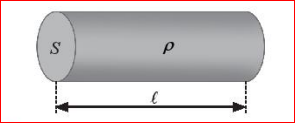
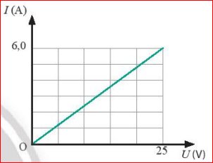
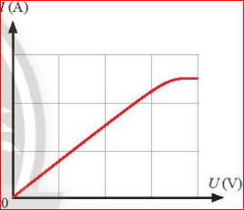
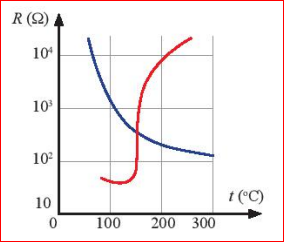

Khi vô tình chạm vào đoạn dây có điện bị hở lớp vỏ cách điện, một thợ sửa chữa bị điện giật nhẹ vì có một dòng điện cỡ 10 mA chạy qua người. Nhưng một người khác cũng chạm vào đoạn dây trên thì có thể nguy hiểm đến tính mạng do có dòng điện 90 mA chạy qua người. Điều gì tạo nên sự khác biệt này?
Đại lượng đặc trưng cho khả năng cản trở dòng điện của một vật dẫn được gọi là điện trở.

Điện trở của một vật dẫn là đại lượng đặc trưng cho khả năng cản trở dòng điện của vật dẫn đó khi có một hiệu điện thế đặt vào hai đầu vật dẫn.
Công thức tính điện trở
Trong đó: $U$ là hiệu điện thế (V), $I$ là cường độ dòng điện (A).
Ở một nhiệt độ xác định, điện trở $R$ của một đoạn dây dẫn kim loại phụ thuộc vào vật liệu làm dây dẫn, tỉ lệ thuận với chiều dài $l$ và tỉ lệ nghịch với diện tích tiết diện $S$ của dây dẫn đó:
Trong đó $\rho$ là điện trở suất của vật liệu, đơn vị là ôm mét ($\Omega \cdot m$).
Đường biểu diễn sự phụ thuộc của cường độ dòng điện vào hiệu điện thế gọi là đường đặc trưng I - U. Đối với vật dẫn kim loại ở nhiệt độ không đổi, đường này là một đoạn thẳng đi qua gốc tọa độ.

Khi đèn hoạt động, dòng điện làm sợi đốt nóng lên đến nhiệt độ cao nên điện trở của nó thay đổi. Đường đặc trưng I-U không còn là đường thẳng.

Là linh kiện có điện trở thay đổi nhạy cảm theo nhiệt độ. Có hai loại chính:

Thông tin kĩ thuật của một loại cáp điện: Diện tích tiết diện \(1,5 \text{ mm}^2\), điện trở mỗi km chiều dài là \(12,12 \Omega\). Hãy xác định điện trở suất của vật liệu làm cáp này.
Lời giải:
• Đổi đơn vị: \(S = 1,5 \cdot 10^{-6} \text{ m}^2\); \(l = 1000 \text{ m}\).
• Từ công thức: \(R = \rho \frac{l}{S} \implies \rho = \frac{R \cdot S}{l}\).
• Thay số: \(\rho = \frac{12,12 \cdot 1,5 \cdot 10^{-6}}{1000} = 1,818 \cdot 10^{-8} \Omega \cdot m\).
• Kết quả: Đây là điện trở suất xấp xỉ của đồng.
Dựa vào bảng số liệu bên dưới của một vật dẫn kim loại, hãy vẽ đường đặc trưng I - U và tính điện trở của vật dẫn.
| U (V) | 0,0 | 1,5 | 3,0 | 4,5 | 6,0 |
|---|---|---|---|---|---|
| I (A) | 0,00 | 0,25 | 0,50 | 0,75 | 1,00 |
Lời giải:
• Đường đặc trưng là đường thẳng đi qua các điểm (0;0), (1.5;0.25)...
• Độ dốc của đường thẳng cho biết giá trị 1/R.
• Tính điện trở: \(R = \frac{U}{I} = \frac{1,5}{0,25} = 6,0 \Omega\).